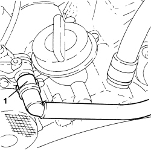
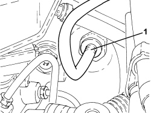
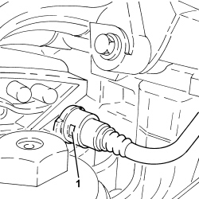
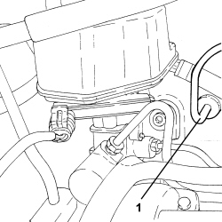
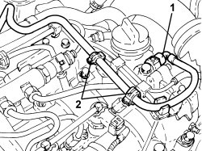
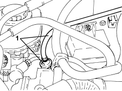

3330D27 VACUUM PIPE COMPLETE WITH ONE-WAY VALVES - R R FOR RIGHT HAND DRIVE VERSIONS
- Path
- Procedures > 33 BRAKES > 3330 HYDRAULIC BRAKE SYSTEM > 3330D BRAKE VACUUM SYSTEM > 3330D27 VACUUM PIPE COMPLETE WITH ONE-WAY VALVES - R R FOR RIGHT HAND DRIVE VERSIONS
- Kind
- repair procedure (removal / refitting; the operation number is the code)
- Applies to
- engines: 2.2, 1.9 JTD 16v, 2.4 JTD 20v; all production periods
- Interactive page
- https://sloeber94.github.io/elrnDB-fCrm/en/#/194004023
Applies to: engines: 1.9 JTD 16v; all production periods
 Removing
Removing
 Refitting
RefittingOp. 1016A10 SOUND-PROOFING COVER - R.R
1. Disconnect the rapid connector for the vacuum pipe, vacuum pump side.

Applies to: engines: 1.9 JTD 16v; all production periods
1. Disconnect the vacuum pipe, brake servo side.

Applies to: engines: 1.9 JTD 16v; all production periods
- Remove the vacuum with single-acting valves after disengaging from the clips.
Applies to: engines: 1.9 JTD 16v; all production periods
Refitting
Removing- Place the vacuum pipe with single-acting valves in its housing and secure it using the clips.
- Connect the vacuum pipe, brake servo side.
- Connect the rapid connector for the vacuum pipe, vacuum pump side.
Applies to: engines: 2.2; all production periods
Removing
RefittingOp. 1016A10 SOUND-PROOFING COVER - R.R
1. Disconnect the rapid connector for the vacuum pipe, air chamber side.

Applies to: engines: 2.2; all production periods
1. Disconnect the vacuum pipe, brake servo side.

Applies to: engines: 2.2; all production periods
- Remove the vacuum pipe complete with single-acting valves after having released it from the fastening clips.
Applies to: engines: 2.2; all production periods
Refitting
Removing- Place the vacuum pipe complete with single-acting valves in position and secure it using the clips.
- Connect the vacuum pipe, brake servo side.
- Connect the rapid connector for the vacuum pipe, air chamber side.
Applies to: engines: 2.4 JTD 20v; all production periods
Removing
RefittingOp. 1016A10 SOUND-PROOFING COVER - R.R
1. Disconnect the rapid connector for the vacuum pipe, vacuum unit side.
2. Release the vacuum pipe from the fastening clips.

Applies to: engines: 2.4 JTD 20v; all production periods
- Disconnect the vacuum pipe, brake servo side.
1. Remove the vacuum pipe complete with single-acting valves.

Applies to: engines: 2.4 JTD 20v; all production periods
Refitting
Removing- Place the vacuum pipe complete with single-acting valves in its housing.
- Connect the vacuum pipe, brake servo side.
- Fasten the vacuum pipe using the clips.
- Connect the rapid connector for the vacuum pipe, vacuum unit side.